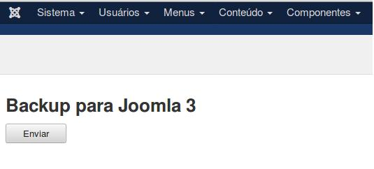
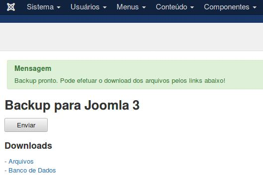

Minhas Extensões para Joomla 3
Descrevendo algumas das extensões que criei para Joomla 3.
Simple Backup
É uma das primeiras extensões que instalo em meus sites criados com Joomla 2.5 e 3.x.
Ela suporta os idiomas inglês e português.
É bem simples, como o nome sugere. Apenas 3 cliques e você tem uma cópia do site em seu desktop.
Ela tem uma limitação. Se seu site crescer e tiver mais de 5GB geralmente ela deixa de funcionar.
Hospedada do GitHub
https://github.com/ribafs/com_simplebackup
Maior site testado: 1.5GB compactado.
Dica: Caso seu site seja maior, basta alterar o arquivo php do componente, mudando a linha do ini_set de 5060 para um valor que te atenda.
Instalação padrão do Joomla
Clique em Componentes - Backup Simples

Então clique no botão Enviar e aguarde a criação dos dois arquivos, sql do banco e o zip dos arquivos e diretórios.

Prontinho. Agora basta clicar nos dois links e guardar bem guardados os dois arquivos.
A recomendação é efetuar nnovo backup a cada alteração significativa do site, alterações, artigos criados, etc.
Restaurando o Backup do Site
Pensamento do Dia
Um pequeno módulo com suporte ao Joomla 2.5 e 3.x, que exibe um pensamento aleatório a cada visita.
Ele sorteia um pensamento dentre 200 contidos em um arquivo texto.
Hospedado no GitHub
https://github.com/ribafs/pensamento-do-dia
Percurso - Google
Módulo para Joomla 2.5 e 3 que mostra um mapa do Google e permite que se entre origem e destino e ele traça o percurso entre a origem e destino.
No GitHub
https://github.com/ribafs/percurso-google
Outras extensões em meu site anterior
http://ribafs.16mb.com/index.php/joomla